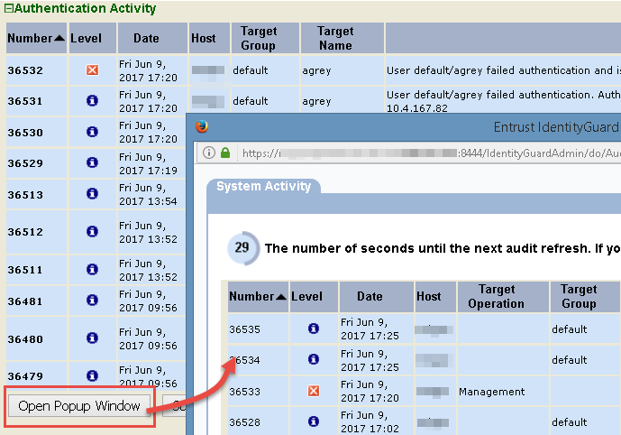
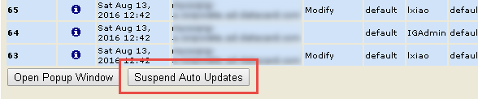
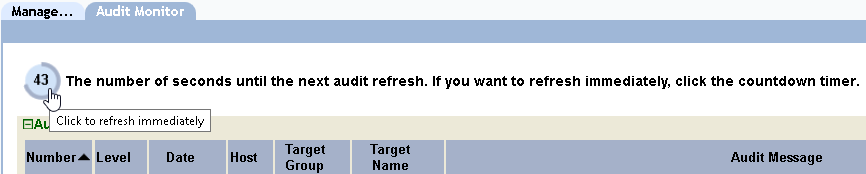

|
IdentityGuard Server 13.0 Administration Guide |
|
IdentityGuard Server 13.0 Administration Guide |
There are several ways to manipulate the display of real-time audit information to fit your workflow.
Click Open Popup Window below an activity list to open the list in a popup browser window. While the list is displayed in a popup window, that activity list is replaced on the Audit Monitor tab with the Show <audit category> Activity Popup button.

If the popup window gets lost among other windows on your desktop, click Show <audit category> Activity Popup on the Audit Monitor tab to bring it to the front.
When you close the popup window, the activity list is again displayed on the Audit Monitor tab.
If you see an audit of interest and you want to ensure that it remains visible while you investigate it, click Suspend Auto Updates. The currently displayed audits remain visible until you click Resume Auto Updates, or until the session times out. The Suspend and Resume Auto Updates operations apply to the activity categories independently, and are available both on the Audit Monitor tab and in popup windows.

If the audits associated with this category were suspended in a popup window, they stay suspended when the popup is closed and the list is displayed on the Audit Monitor tab. If auto-updates were not suspended, the Audit Monitor tab displays a refreshed view of the active categories.
Audit activity is refreshed every 60 seconds on the Audit Monitor tab or in popup windows. The timer is independent for each popup window. To refresh the view immediately, click the countdown timer in the upper left corner of the Audit Monitor tab.
